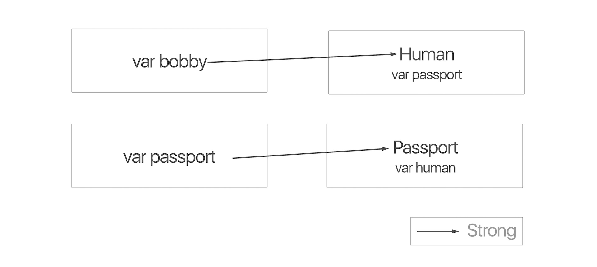
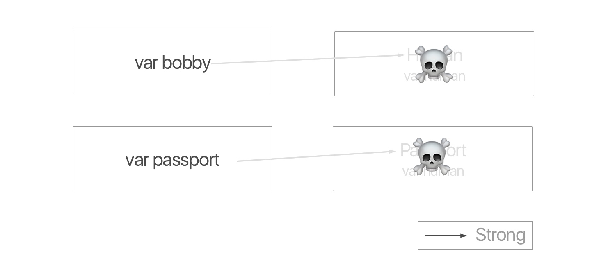
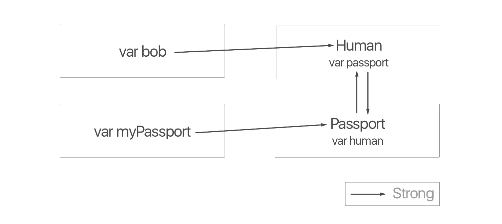
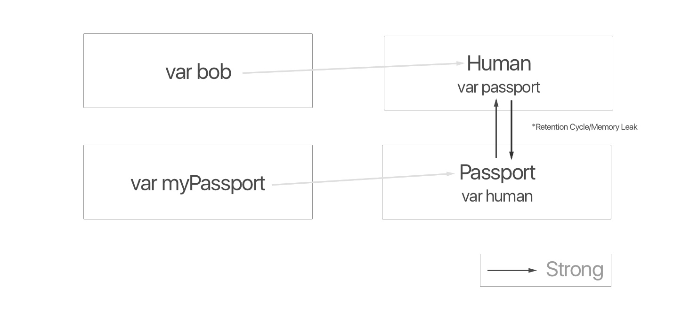
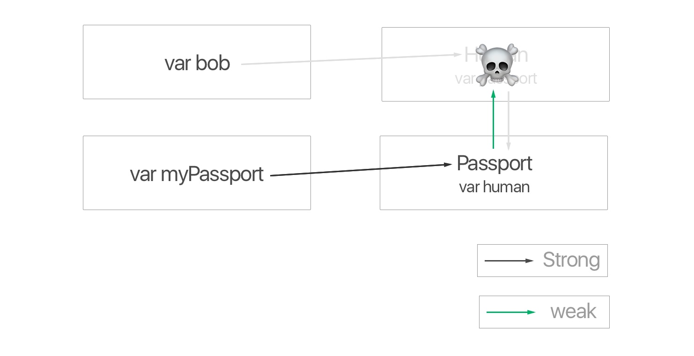
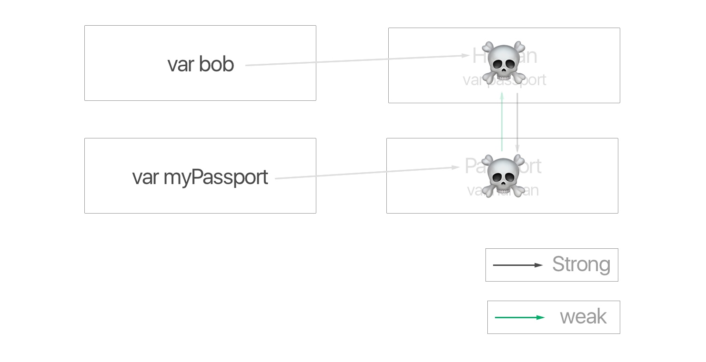

Automatic Reference Counting
Introduction
Welcome to Lesson 1 of Swift Memory Management. You will learn the definition of the term "memory" in the context of the Swift Programming Language. By the end, you will understand how objects are initialized and destroyed by the operating system.
Problem
Deallocate and allocate objects with ARC
What is Memory
There are primarily two places to store data: 1. RAM or 2. Hard Disk. The term "memory" refers to management of space of RAM.

When an object is initialized, it is physically stored on RAM. Since the space is limited, the object should be removed when unused. The process is known as deallocation. You will learn how to deallocate objects using ARC, Automatic Reference Counting.
Design Passport
Create a class called, Passport. It contains two properties whose types are Human?and String. The Human class defined below.
class Passport {
var human: Human?
let citizenship: String
init(citizenship: String) {
self.citizenship = citizenship
print("\(citizenship) passport generated")
}
deinit {
print("I, paper, am gone")
}
}
Design Human
Create a class called, Human. It contains two properties whose types are Passport? and String.
class Human {
var passport: Passport?
let name: String
init(name: String) {
self.name = name
print("\(name) generated")
}
deinit {
print("I, \(name), gone")
}
}
Important: The
deinitblock runs automatically when the object no longer exists on its RAM.
Create Instances
Let us create an object without var or let.
Passport(citizenship: "Republic of Korea")
// "Republic of Korea passport generated"
// "I, paper, am gone"
Ironically, the Passport object has been deallocated immediately after initialized. Let us create a variable that has a reference to Passport.
var myPassport = Passport(citizenship: "The Mars")
// "The Mars passport generated"
The Passport object is not deallocated. The phenomenon is due to Automatic Reference Counting. If an object has a reference, it stays. Conversely, there is no reference, the object gets deallocated automatically.
The Only Rule: If the reference count reaches zero, the object is deallocated.
Create Instances
Create two instances one with Human and the other one with Passport.
var bobby: Human? = Human(name: "Bobby")
var passport: Passport? = Passport(citizenship: "Republic of Korea")
Let us visualize the relationship.

Deallocate
You may set the relationship as nil.
bobby = nil // deallocated
passport = nil // deallocated

Important: When you set the variable as
nil, you destroy the reference, not the object itself. The object is deallocated usually since the reference count reaches zero.
Discover Retention Cycle
However, we do not live in an ideal world. Even if you set the reference as nil, the object may stay in the RAM forever.
Create Instances
Create two instances: bob and myPassport.
var bob: Human? = Human(name: "Bob")
var myPassport: Passport? = Passport(citizenship: "Republic of Korea")
Create a relationship between the instances
bob?.passport = myPassport
myPassport?.human = bob
Let us visualize the relationship

The Human object has two references from bob and Passport. The Passport object has two references from myPassport and Human.
Deallocation
Let us set the relationship from bob and myPassport as nil. However, it is not deallocated.
bob = nil // Human not deallocated
myPassport = nil // Passport not deallocated

The Human object's reference count is one from the Passport object. The Passport object's reference count is one from the Human object. There is no way to deallocate both of them. The current situation is called, retain cycle or memory leak.
So solve the problem, you may set one of the relationship as weak which does not increase the reference count.
class Passport {
weak var human: Human?
let citizenship: String
}

Currently, the Human object has one reference count from bob only since the weak reference does not increase the reference count.
Deallocation
Let us attempt to deallocate the objects.
bob = nil
// "I, Bob, gone"
The Human object is deallocated since the reference count reaches zero.

You may destroy the Passport object
myPassport = nil
// "I, paper, am gone"

Important: There is no such thing as retain cycle in structs and enums.
Source Code
5001_intro_memory_management.playground
Resources
Make Memory Management Great Again
Conclusion
First, you've learned the definition of Memory Management in the concept of the Swift Programming Language. Always think about the fridge as well as the sour milk. You only want foods that are nice and fresh. Second, when you set the variable as nil, it does not mean destroying the object. It means removing the reference. Last, it's all about the reference count. Make it zero if you wish to deallocate.
In the following lesson, you will learn a possible retain cycle that might occur when you use the delegate pattern. Make sure you review the previous lesson before proceed.
Note: Learn Swift with Bob is available on Udemy. If you wish to receive a discount link, you may sign up here.